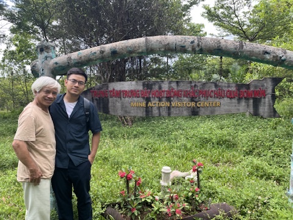
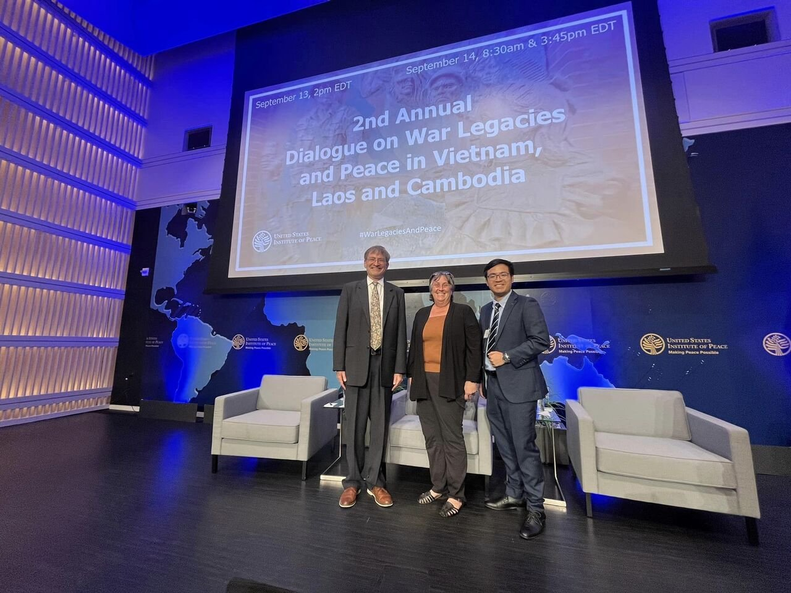
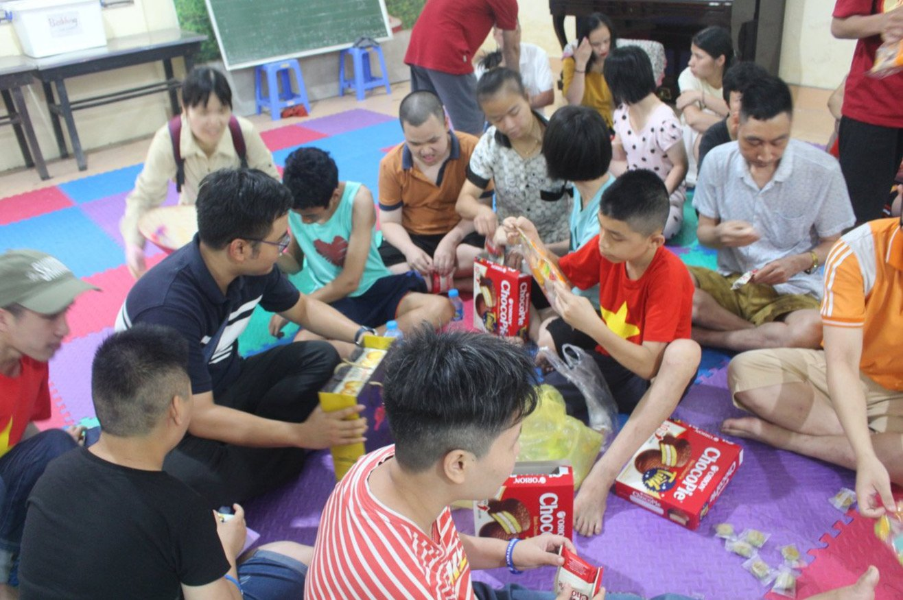
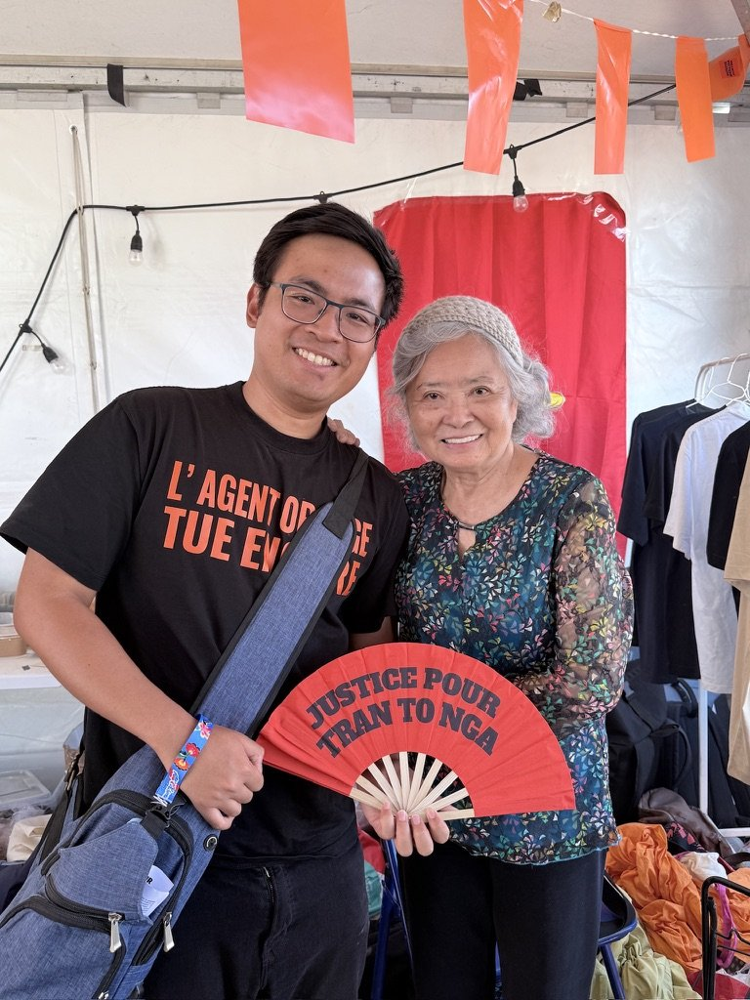

2025
Research on War Legacies and Memory Politics
Born and raised in Hanoi in a family with a revolutionary background, I grew up with stories of how earlier generations lived through and fought against colonialism and imperialism. My father served in Quảng Trị, a province devastated by intensive US bombing and the spraying of Agent Orange.
Bringing my upbringing in post-war Vietnam together with my training in International Relations, I explore how the legacies of the Second Indochina War are addressed, commemorated, and contested. My work spans academic research and policy engagement, bringing me into conversation and collaboration with scholars, experts, NGOs, activists, artists, and victims of war across Southeast Asia, the United States, Europe, and Australia. Through participation in Track 2 and Track 1.5 dialogues on war legacies, I also connect research with ongoing efforts to address the war’s enduring consequences.




Featured research
United States
Institute of Peace
Agent Orange Victims in Vietnam
Their Numbers, Experiences, Needs, and Sources of Support
01 Doctoral project
In progress · Australian National University
Confronting an Empire of Memory
Vietnam, the United States, and the Mnemonic War over Agent Orange
Through the case of Agent Orange, my thesis examines how Vietnam confronts American hegemony in global memory-making. It follows Vietnamese doctors, scientists, state officials, victims’ advocates, litigants, and museums as they negotiate, contest, and co-produce narratives of Agent Orange in relation to the American empire of memory.
Drawing on Bourdieu’s sociological toolkit, I explore how these actors’ social trajectories, institutional positions, and resources shape their strategies and practices across science, law, diplomacy, humanitarian assistance, and culture. The research draws on archival documents, interviews, and ethnographic observation in Vietnam and France.
03 Fieldwork
Fieldwork
2026
04 Talks & events
05 Contact
Continue the conversation
For academic collaboration and conversations about Agent Orange, war legacies, and memory politics.
xuandung.phan@anu.edu.au ↗